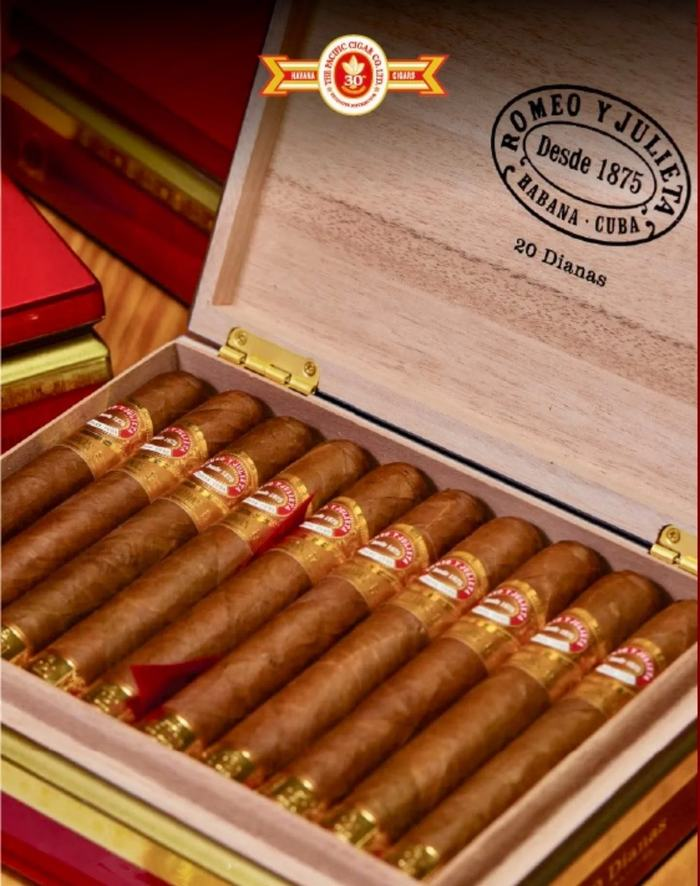
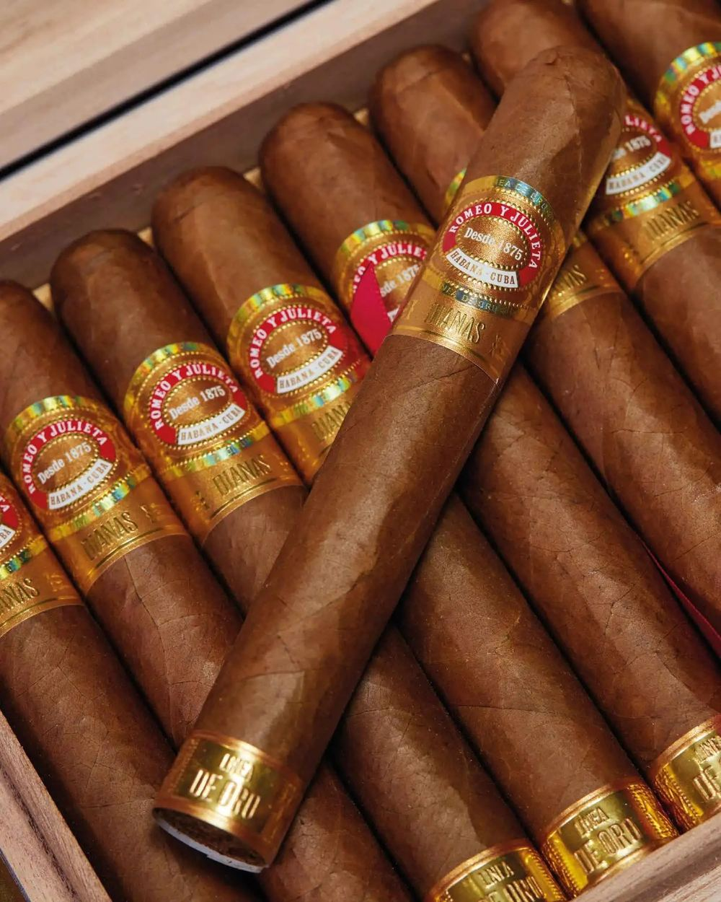

Montecristo
No. 4
Medium
Cuba
A classic Cuban with creamy, complex notes of cedar and cocoa. Smooth transition from a mild start to a medium body.
CNX Cigars is a space for adults. Please confirm you are of legal age to view tobacco-related content where you live. We keep this gentle, but the law is the law.
The collection
Hand-selected cigars from the world's finest origins. Each tells a story of soil, climate, and craft.
Showing 24 of 24 cigars

Montecristo
A classic Cuban with creamy, complex notes of cedar and cocoa. Smooth transition from a mild start to a medium body.
Cohiba
Signature Cohiba grassy sweetness over a creamy base, with honeyed depth that builds through the second third.

Romeo y Julieta
Elegant and aromatic, with cedar and a soft floral lift over gentle leather. A long, even, contemplative smoke.
Partagas
Bold and earthy with black pepper and dark cocoa. A powerful, full-bodied Habano that holds its line to the band.
Hoyo de Monterrey
Delicate and creamy, with almond and light cedar. One of the most refined milder Habanos available.
Padron
Rich box-pressed maduro with dark cocoa, espresso and toasted oak. Deep, sweet and impeccably constructed.
Arturo Fuente
A perfecto in miniature. Cedar and warm nutmeg with a sweet spice the Cameroon wrapper is loved for.
Rocky Patel
A polished Sumatra wrapper over caramel sweetness and a measured pepper. Smooth and well-aged in character.
Davidoff
Refined and silky, with cream, cashew and a whisper of white pepper. The definition of understated luxury.
Oliva
Full and refined at once. Espresso and cocoa with a structured black pepper spine and a long sweet finish.
My Father
Dense and luxurious. Dark chocolate and leather with a peppery crescendo. A box-pressed powerhouse.
Ashton
Smooth, buttery and gentle, with cedar and a clean hay sweetness. A textbook mild Connecticut.
Montecristo
A thicker, more contemporary Montecristo. Coffee and cocoa with the house cedar, richer than the No. 4.
Cohiba
The pinnacle of the Linea Clasica. Honeyed, creamy and woody, layered and long. A special-occasion Habano.
Romeo y Julieta
A shorter, fatter take on the Churchill. Leather and toast over the familiar cedar, with a fuller draw.
Padron
Lavish and deep. Coffee, caramel and cocoa in a flawless box-pressed body. Among the most decorated cigars made.
Arturo Fuente
The legendary all-Dominican puro. Spicy, cedary and rich with dark fruit. Rare, coveted and unmistakable.
Oliva
A creamy Connecticut over Nicaraguan filler, giving it more body than most mild cigars. Almond and gentle cedar.
Rocky Patel
A big-ring maduro with espresso, dark chocolate and a pepper kick. Bold and modern in the hand.
Davidoff
Davidoff refinement with Nicaraguan backbone. Bright pepper up front settling into cedar and sweet spice.
My Father
A rich, full Nicaraguan puro. Cocoa and pepper with a warm cinnamon sweetness through the finish.
Partagas
A grand prominente. Earthy and leathery with deep cocoa, evolving slowly across a long, generous smoke.
Ashton
Virgin Sun Grown, rich and oily. Cedar and pepper over a sweet, earthy core. A serious full-bodied Dominican.
Hoyo de Monterrey
A thicker modern Hoyo. Creamy and elegant with cedar and toasted nut, more body than the classic line.
No cigars match those filters just now.
Try removing a filter or clearing your search. If you are after something specific, we are happy to help in person.